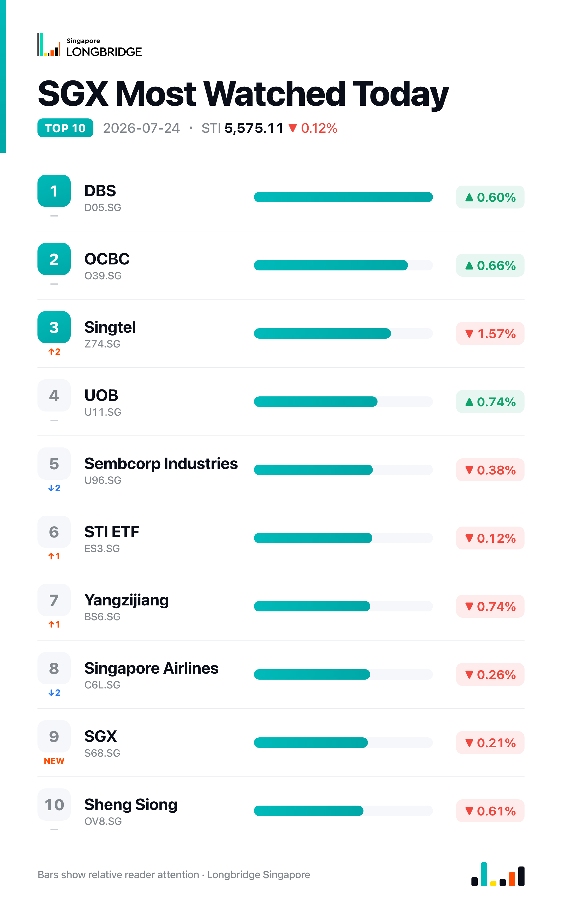

STI Dips 0.12% for a Second Session as Banks Rebound, Property and Telcos Weigh
The Straits Times Index closed at 5,575.11 on Friday, down 0.12%, or 6.65 points, marking a second straight session lower since Wednesday's record close of 5,595.42. The pullback was narrow — the index moved between an intraday high of 5,582.92 and a low of 5,539.54 — and it came even as all three local banks advanced, with the drag instead concentrated in property and telecommunications counters.
The tight range suggested a market absorbing Thursday's bank-led profit-taking rather than extending it: DBS, OCBC and UOB, whose declines had driven Thursday's dip, all closed higher on Friday, adding 0.6%, 0.66% and 0.74% respectively. But the recovery in the index's largest weights was not enough to lift the broader market, as property and telecommunications names gave up more ground than the banks gained, leaving the 30-stock basket with 14 decliners against 11 advancers and five unchanged.
Session Movers
UOL Group (U14.SG, -3.09%) posted the steepest decline among Friday's movers as property counters led the session's losses, with City Developments also down 2.98% and REIT names CICT, MPACT and CapitaLand Ascendas REIT all lower. No fresh company-specific catalyst accompanied the drop: UOL confirmed on 10 July it will report first-half results on 12 August, and its most recent corporate move was a S$68.5 million deal in May to buy out UOB's remaining stake in the former Faber House. The stock trades at 0.698 times book, cheaper than about 9% of its five-year range, against a Buy consensus implying roughly 28% upside.
Singtel (Z74.SG, -1.57%) was the session's largest decliner outside the property complex, weighed down by a 15 July report describing persistently intense competition in Singapore's mobile market after a proposed merger collapsed. That overshadowed four industry recognitions the telco picked up from Frost & Sullivan on 19 July, spanning enterprise connectivity, cybersecurity and digital-transformation leadership, and its disclosure the same week of the winding-up of subsidiary Viridian Limited. Consensus rating remains Buy, with a target implying about 21% upside.
Seatrium (5E2.SG, +1.43%) advanced after confirming its first-half 2026 results will be released before market open on 31 July, giving the market a fixed date to anchor updated guidance. The gain also followed news that Kinetics, an initiative of Karpowership, began construction at Seatrium's Singapore yard of the LNGT Karadeniz, a floating storage and regasification unit with capacity of up to 600 million standard cubic feet per day, alongside a separate ABS approval for an offshore ammonia energy hub concept. The stock trades at 21.99 times earnings, cheaper than about 85% of its one-year range, against a Buy consensus implying roughly 29% upside.
UOB (U11.SG, +0.74%) rose after setting out plans to grow its Hong Kong private-bank assets under management fivefold by 2030, a target that follows its 20 July hire of banking veteran Judy Chan to lead the Hong Kong private-wealth push. The lender also began upgrading more than 300,000 Visa cards across five ASEAN markets to new Visa Infinite Privilege and Private tiers, with eligible cardholders to be notified from September. UOB trades at 1.46 times book, cheaper than just 3% of its one-year range — among the richest levels in its recent history — against a Hold consensus implying about 2% downside from current levels.

One point worth noting
Friday's -0.12% headline masked a split session: all three local banks closed higher, yet the broader 30-stock basket still finished with more decliners than advancers, at 14 against 11, as property and telecommunications names did the damage. It is the second straight session in which the index-level move has understated what was happening beneath it — Thursday's -0.24% obscured a single-stock air pocket in DFI Retail, while Friday's smaller decline reflected a broader split between a recovering bank complex, already trading near its richest valuation levels in a year, and weakness elsewhere.
This recap is for informational purposes only and does not constitute investment advice.